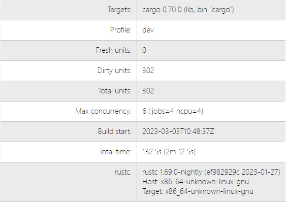
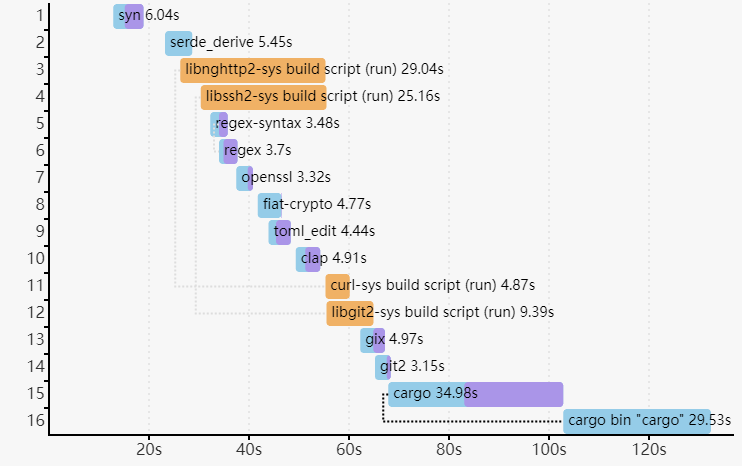

빌드 시간 보고
--timings 옵션은 각 컴파일이 소요되는 시간에 대한 정보를 제공하고, 시간 경과에 따른 동시성 정보를 추적합니다.
cargo build --timings
이것은 target/cargo-timings/cargo-timing.html 에 HTML 보고서를 작성합니다. 또한 이전 실행 기록을 보고 싶은 경우를 위해, 파일 이름에 타임스탬프가 포함된 보고서 사본을 동일한 디렉터리에 작성합니다.
그래프 읽기
출력에는 두 개의 표와 두 개의 그래프가 있습니다.
첫 번째 표는 프로젝트의 빌드 정보를 표시합니다. 여기에는 빌드된 유닛 수, 최대 동시성 수, 빌드 시간, 현재 사용 중인 컴파일러의 버전 정보가 포함됩니다.

The “unit” graph shows the duration of each unit over time. A “unit” is a single compiler invocation. There are lines that show which additional units are “unblocked” when a unit finishes. That is, it shows the new units that are now allowed to run because their dependencies are all finished. Hover the mouse over a unit to highlight the lines. This can help visualize the critical path of dependencies. This may change between runs because the units may finish in different orders.
“코드 생성(codegen)” 시간은 연보라색으로 강조 표시됩니다. 어떤 경우에는 빌드 파이프라이닝을 통해 의존성이 코드 생성을 수행 중일 때 유닛이 시작될 수 있습니다. 이 정보가 항상 표시되는 것은 아닙니다 (예를 들어, 바이너리 유닛은 코드 생성이 시작되는 시점을 표시하지 않습니다).
“커스텀 빌드” 유닛은 build.rs 스크립트이며, 실행 시 주황색으로 강조 표시됩니다.

두 번째 그래프는 시간에 따른 Cargo의 병렬성(concurrency)을 보여줍니다. 배경은 CPU 사용량을 나타냅니다. 세 개의 선은 다음과 같습니다.
- “대기 중(Waiting)” (빨간색) — CPU 슬롯이 비기를 기다리는 유닛의 수입니다.
- “비활성(Inactive)” (파란색) — 의존성이 완료되기를 기다리는 유닛의 수입니다.
- “활성(Active)” (초록색) — 현재 실행 중인 유닛의 수입니다.

참고: 이는 컴파일러 자체의 병렬성을 보여주는 것은 아닙니다. rustc 는 병렬성 제한 내에서 유지하기 위해 “작업 서버(job server)“를 통해 Cargo와 조율합니다. 현재 이는 주로 코드 생성 단계에 적용됩니다.
컴파일 시간을 해결하기 위한 팁:
- 속도가 느린 의존성을 찾으세요.
- 비활성화를 고려해볼 만한 기능(feature)이 있는지 확인하세요.
- 의존성을 완전히 제거하는 것을 고려해보세요.
- 서로 다른 버전으로 여러 번 빌드되는 크레이트가 있는지 확인하세요. 의존성 그래프에서 이전 버전을 제거해 보세요.
- 큰 크레이트를 작은 조각으로 나누세요.
- 단일 크레이트에서 병목 현상이 발생하는 크레이트가 많은 경우, 병렬성을 개선하기 위해 해당 크레이트를 개선하는 데 집중하세요.
마지막 표에는 각 유닛에 소요된 총 시간과 “코드 생성” 시간, 그리고 각 유닛 컴파일 중에 활성화된 기능들이 나열됩니다.